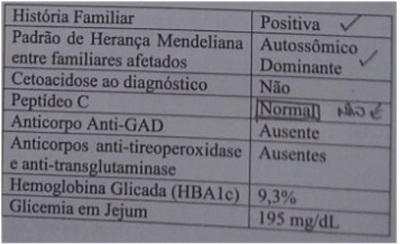
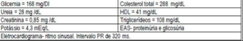

Questão 1 · Fatores de risco · Manif estações e características clínicas · Patogênese e evolução da doença · 4000120256Uma menina de treze anos de idade foi levada à consulta ambulatorial de rotina, apresentando exame de glicemia capilar de jejum 184 mg/dL. Ao exame, tinha pressão arterial de 140 x 89 mmHg e IMC de 32 kg/m². Seu pai é obeso e sua mãe tem diabetes mellitus (DM) tipo 2. Com base nesse caso hipotético, assinale a alternativa correta em relação ao provável quadro de DM tipo 2 da criança.
A Puberdade e sexo feminino não são fatores de risco.
B Apresentam complicações mais tardias.
C É mais grave que a DM tipo 2 do adulto.
D Não pode cursar com cetoacidose diabética ou cetose.
E A insulina é contraindicada nesse tipo de DM.
Questão 2 · Hemoglobina glicada HbA1c · 4000082527Um homem de 51 anos relata historia de diabetes melito tipo 2 há 6 anos. A historia patológica pregressa é significativa para a infecção crônica por hepatite C, doença renal crônica estagio 3 e uma hospitalização recente por um sangramento gastrointestinal superior. Ele utiliza sulfonilureia para controle glicêmico e raramente verifica sua glicemia. A concentração de glicose plasmática em jejum no consultório é de 195 mg/dL e a HbA1c é de 6,8%. O que você conclui sobre o controle glicêmico?
A A concentração média de glicose no sangue durante os últimos 3 meses é de aproximadamente 140 mg/dL;
B HbA1c pode estar falsamente elevada por causa da doença renal crônica;
C HbA1c pode estar falsamente baixa devido a doença hepática;
D Os níveis de HbA1c aumentam após uma perda sanguínea aguda;
E Os níveis de HbA1c refletem melhor a concentração de glicose pós-prandial do que a de jejum;
Questão 3 · Fatores de risco · Critérios diagnósticos · 4000048218Qual dos pacientes a seguir poderia ser considerado portador de Diabetes Melitus tipo 2, segundo as diretrizes vigentes da sociedade Brasileira de Diabetes?
A Paciente com sobrepeso, assintomático, com glicose de jejum de 128 mg/dL e com 178 mg/dL após sobrecarga de 75g de glicose.
B Paciente assintomático com glicemia aleatória de 202 mg/dL.
C Paciente portador de obesidade, assintomático, com glicose de jejum de 135mg/dL em um primeiro exame e hemoglobina glicada de 7,2% dosada em outra ocasião.
D Paciente com queixa de perda ponderal e poliúria com hemoglobina glicada de 6,2%.
E Paciente idoso, assintomático, glicose de jejum de 118 mg/dL e hemoglobina glicada de 6%.
Questão 4 · Individualização do tratamento · Metas de controle glicêmico · Acompanhamento ambulatorial · 4000046827O adequado controle glicêmico é ponto fundamental no manejo de pacientes diabéticos, visando a proteção de órgãos alvo, bem como a prevenção de complicações precoces e tardias da doença. No seguimento do paciente com diabetes é extremamente importante a mensuração periódica deste controle, para que se consigam atingir e manter alvos glicêmicos bem definidos, possibilitando ajustes terapêuticos quando estes forem necessários. No contexto do controle de resultados terapêuticos em diabéticos, assinale a alternativa correta.
A O exame mais fidedigno para essa finalidade é a hemoglobina glicada (A1C), que deve ser mensurada a cada 3 meses até que o paciente mostre 4 medidas menores ou iguais a 8%.
B A medida da glicemia de jejum digital em ambiente domiciliar é fundamental para que se consiga ajustar as medicações nos primeiros 6 meses de seguimento.
C Diversos estudos mostram evidências de que em um paciente com baixa expectativa de vida um controle mais intensivo da glicemia (hemoglobina glicada < 7%) está relacionada ao aumento da sobrevida.
D Hemoglobina glicada < 7% é considerada um alvo glicêmico razoável para a maioria dos pacientes com diabetes mellitus.
E Em pacientes de difícil controle terapêutico são indicadas reavaliações mensais com mensuração da hemoglobina glicada para ajustes imediatos de terapêutica.
Questão 5 · Diabetes · 4000031689Sobre o Diabetes Mellitus, assinale a alternativa INCORRETA:
A Insulina regular aplicada sob a via subcutânea tem início de ação em aproximadamente 05 minutos e pico de ação em 01 hora.
B O efeito colateral mais frequente da metformina é a intolerância gastroinstestinal.
C Presença de condições como anemia hemolítica, pode afetar a interpretação dos níveis de hemoglobina glicosilada.
D Síndrome de Cushing é associada à hiperglicemia.
Questão 6 · Rastreamento · Antipsicóticos · Fatores de risco · 4000019098Mulher de 24 anos procura unidade básica de saúde preocupada com o risco de desenvolver diabetes (DM), uma vez que a mãe foi diagnosticada recentemente com pré-diabetes. Trouxe exames de glicemia de jejum, hemoglobina glicada e teste de tolerância oral à glicose com 75g com valores de 94 mg/dL, 5,5% e 136 mg/dL, respectivamente. Antecedentes: DM gestacional há 2 anos; acompanhamento psiquiátrico por motivo desconhecido. Ao exame: Normotensa, IMC 22,7 kg/m². O médico orienta quanto ao estilo de vida e decide rastrear para DM a cada 3 anos. Entretanto, recebe informação durante a consulta que o psiquiatra está cogitando iniciar uma medicação. Qual das medicações abaixo, caso prescrita, terá a maior probabilidade de fazer com que o médico necessite modificar o rastreamento inicialmente proposto?
A Sertralina.
B Topiramato.
C Olanzapina.
D Bupropiona.
Questão 7 · Individualização do tratamento · Acompanhamento ambulatorial · 4000018979Em relação ao Sistema de Monitoramento Contínuo em Tempo Real (Real-Time Continuous Glucose Monitoring, RT- CGM), somente NÃO pode ser atribuído a ele:
A Não fornece os níveis de glicose em determinado momento.
B Podendo avaliar a elevação ou a diminuição da glicemia.
C Possibilita ajustes imediatos do tratamento insulínico.
D Possibilita ajustes retrospectivos do tratamento insulínico.
Questão 9 · Individualização do tratamento · Metas de controle · Acompanhamento ambulatorial · 4000009555Existem diferentes estratégias, esquemas e tipos de insulinas disponíveis, podemos APENAS aceitar que:
A Apesar de não existirem recomendações de metas glicêmicas para o controle do DM, é importante a necessidade de individualização dos objetivos glicêmicos.
B Apesar de existirem recomendações de metas glicêmicas para o controle do DM, é importante enfatizar a necessidade de não causar a individualização dos objetivos.
C Apesar de existirem recomendações de metas glicêmicas para o controle do DM, é importante enfatizar a necessidade de individualização dos objetivos glicêmicos, evitando-se tanto sequelas de hipoglicemias quanto alterações no sistema nervoso central decorrentes de hiperglicemias alternadas com hipoglicemias.
D Apesar de não existirem recomendações de metas glicêmicas para o controle do DM, é importante enfatizar a necessidade de individualização dos objetivos no sistema nervoso central.
Questão 10 · Critérios diagnósticos · 4000096975Para o diagnóstico de diabetes são utilizados: glicemia de jejum, teste oral de tolerância à glicose (TOTG) - 120 e hemoglobina glicada. Marque a alternativa com dados corretos para diagnosticar diabetes.
A Glicemia de jejum maior do que 200, uma vez.
B Glicemia de jejum maior do que 100, uma única medida.
C Glicemia de jejum ou TOTG - 120 alterados.
D HbAAc menor do que 5,7%.
E HbAAc maior do que 5,7%.
Questão 11 · Diabetes Mellitus tipo 2 DM 2 · 4000086255Adolescente, 12 anos, é levada ao ambulatório de pediatria por sua mãe, que traz exame de rotina mostrando glicemia de jejum de 220 mg/dl e exame de urina realizado há 6 meses, com glicosúria. Em sua história, nega polidipsia, porém relata levantar duas vezes à noite para urinar. Refere ter emagrecido 1 kg nos últimos 3 meses, após ter iniciado dieta por conta própria, pois está se achando gordinha e não quer car obesa como sua mãe e suas tias. Avó materna diabética, falecida aos 55 anos por AVC. Mãe é hipertensa e teve diabetes na gestação, mas desde então não mediu a glicemia. Exame físico: 1,50 m de altura, 65 kg, bom estado geral, hidratada, eupneica. Abdome globoso e acantose nigricans na região cervical. Apresenta candidíase vaginal e a PA = 140 x 90 mmHg. Sem outras alterações. Pode-se a rmar que a hipótese diagnóstica mais provável é diabetes mellitus tipo:
A 2 e deve-se iniciar o tratamento com sulfoniluréia como droga de primeira escolha.
B 1 e deve ser encaminhada à emergência devido ao risco iminente de cetoacidose diabética.
C 2, já que a evolução é insidiosa, a paciente é oligossintomática e apresenta sinais sugestivos de resistência à insulina.
D 1, já que há outros familiares com diabetes, além de ser o tipo mais comum nesta faixa etária.
Questão 12 · Maturity Onset Diabetes of the Young MODY · 4000079181Um adolescente de 17 anos teve o diagnóstico de diabete melito tipo 1 aos 12 anos e foi medicado com dose baixa de insulina e metformina, ambos usadas de forma irregular. Não teve episódios de descompensação no diagnóstico ou internações durante o seguimento. Não tem antecedentes para diabete tipo 1, apenas positivo para tipo 2. Vem para avaliação trazendo hemoglobina glicada (por HPLC) de 7,0%, referindo controles glicêmicos esporádicos de até 180mg/dL, sem queixas clínicas. Exame clínico normal. Peso e estatura próximos ao P50. O diagnóstico mais provável para esse adolescente é
A pré-diabete (intolerância à glicose).
B diabete tipo L ADA.
C diabete tipo 2 em fase inicial.
D diabete monogênico (MODY2).
Questão 13 · Critérios diagnósticos · 4000077511Segundo a Sociedade Americana de Diabetes, constitui um critério para diagnóstico de diabetes melito:
A glicose plasmática em jejum de 6,0 mmol/L (107 mg/dL)
B glicose plasmática de 2h de 9,9 mmol/L (180 mg/dL)
C sintomas de diabetes e glicose aleatória sanguínea de 10,5 mmol (190 mg/dL)
D hemoglobina A1c de 7,0 %
Questão 14 · Peptídeo C · Diabetes Mellitus tipo 1 DM 1 · 4000069273Paciente de 30 anos, obeso, com IMC 35.51 (peso 110/alt 1,76). Tem relato de obesidade na infância e internação hospitalar aos 20 anos por cetoacidose diabética. Desde então faz uso de insulina NPH de forma irregular. Para confirmação do diagnóstico etiológico de diabete melito tipo 1 espera-se:
A Presença de anticorpos anti-ilhota (ICA) e anti-desidrogenase do ácido glutâmico (GAD) e medida plasmática do peptídeo-C com valores estimulados com menores que 1,5 ng/ml.
B Glicemia casual após 2h maior ou igual a 199 mg, e dosagem de hemoglobina glicada (HbA1c) maior que 5,7 % em duas aferições, e de frutosamina baixa ou normal; presença de microalbuminúria.
C Glicemia de jejum ≥ 126 mg e dosagem de hemoglobina glicada (HbA1c) maior que 6,5 % em duas aferições, e de frutosamina elevada; presença de corpos cetônicos na urina.
D Autoanticorpos contra insulina, descarboxilase do ácido glutâmico (GAD) ou tirosina- fosfatase (IA2) negativos; valores de peptídeo-C acima de 0,9 ng/ml no basal e acima de 1,8 ng/ml após a injeção de glucagon.
Questão 15 · Critérios diagnósticos · 4000047789Durante a realização de exames anuais com sua ginecologista, uma paciente de 52 anos, religiosa, hipertensa em uso de valsartana + anlodipina, com índice de massa corpórea de 30 kg/m², sedentária e com pai diabético, apresentou glicemia em jejum de 116 mg/dl e hemoglobina glicada de 6%. A melhor conduta no presente caso é:
A realizar um teste oral de tolerância à glicose.
B repetir a glicemia em outra ocasião.
C iniciar dieta, exercício e um anti-diabético oral.
D solicitar uma glicemia pós-prandial.
E solicitar a dosagem de insulina e peptídeo C.
Questão 16 · Fatores de risco · Critérios diagnósticos · 4000034141Mulher, 48 anos, sobrepeso, sedentária, antecedente de síndrome do ovário micropolicistico, informa que recentemente percebeu perda ponderal não programada, polifagia, polidipsia, poliúria e astenia. Diante deste caso a principal hipótese diagnóstica e o exame solicitado inicialmente são:
A Hipotireoidismo/dosagem de TSH e T4 livre.
B AIDS/ anti-HIV.
C Diabtes mellitus/glicemia.
D Câncer/ PET-CT.
Questão 17 · Diabetes induzido por drogas · Tratamento medicamentoso · Glicocorticóides · 4000033989Mulher portadora de câncer de mama e em uso de dexametasona (10 mg) em cada seção de quimioterapia, evoluiu com aumento de glicemia de jejum (200 mg/dl) hemoglobina glicada de 8% e triglicérides de 200 mg. Diante dessa situação as medidas iniciadas são
A reduzir ou suspender a dexametasona, estimular a realização de exercícios físicos, reeducação alimentar e metiformina.
B manter a dexametasona na mesma dose, pois ela não interfere na glicemia e inciar o uso de insulina NPH.
C reduzir ou suspender a dexametasona e iniciar uso de insulina glargina.
D manter a dexametasona ajustando a dose, estimular realização de exercícios físicos e reeducação alimentar.
Questão 18 · Diabetes · 4000020235Diabetes mellitus (DM) é uma das mais importantes enfermidades que acometem nossa população atualmente. Acerca dela, pode-se afirmar que:
A O DM tipo 2 caracteriza-se por perda progressiva de secreção insulínica combinada com resistência a insulina.
B Para firmarmos o diagnóstico do DM tipo 1A devemos necessariamente excluir a presença de um ou mais autoanticorpos.
C O diabetes mellitus tipo 2 (DM2) corresponde a 60% de todos os casos de DM.
D A glicemia em jejum deve ser coletada em sangue periférico após jejum calórico de no mínimo 12 horas.
E Em idosos frágeis, o alvo de HbA1c deve ser de < 6,5%
Questão 19 · Outros tipos de Diabetes Mellitus · Diabetes Mellitus tipo 1 DM 1 · Introdução ao Diabetes Mellitus · 4000016846Sobre a etiologia e fisiopatologia do Diabetes Mellitus, assinale a alternativa CORRETA:
A O diabetes autoimune acomete apenas crianças e adolescentes.
B A hipertrigliceridemia por deficiência de insulina pode ocorrer no diabetes tipo 2, porém não no tipo 1.
C A acromegalia, a síndrome de Cushing e o hipotireoidismo são causas endócrinas de Diabetes Mellitus.
D O Diabetes Mellitus tipo 2 apresenta aumento da produção hepática de glicose.
Questão 20 · Critérios diagnósticos · 4000004956O diagnóstico de diabetes mellitus pode ser estabelecido quando o indivíduo apresenta:
A Glicemia de jejum "maior ou igual a" 100 mg/dl independente dos valores da glicemia pós-prandial e da HbA1c.
B Glicosúria e frutosamina "maior ou igual a" 300 mg/dl.
C Glicemia de jejum "maior ou igual a" 126 mg/dl ou glicemia 2h após sobrecarga de glicose via oral "maior ou igual a" 200 mg/dl ou HbA1c "maior ou igual a" 6,5%.
D Glicosúria e/ou cetonúria positivas.
E Glicemia de jejum "maior ou igual a" 115 mg/dl e poliúria superior a 4 litros por dia.
Questão 21 · Critérios diagnósticos · 4000125355Sobre os diferentes métodos diagnósticos de diabetes mellitus (DM), é CORRETO afirmar que:
A Glicemia de jejum inferior a 110 mg/dL descarta o diagnóstico de DM.
B Hemoglobina glicada representa o método mais prático e acurado para avaliar o estado glicêmico e valores superiores a 5,7% confirmam o diagnóstico de DM.
C Valores de glicose superiores a 126 mg/dL em dois exames obtidos em dias diferentes, realizados através de glicemia capilar, confirmam o diagnóstico de DM.
D Valores de glicemia após 2 horas no teste oral de tolerância à glicose com 75 g de glicose anidra entre 140 e 199 mg/dL não confirmam o diagnóstico, mas são classificados como risco aumentado de DM.
E Pacientes com sintomas clássicos de hiperglicemia e com glicemia ao acaso, superior a 200 mg/dL, devem ser submetidos a teste oral de tolerância à glicose, com 75 g de glicose anidra para confirmar o diagnóstico de DM.
Questão 22 · Critérios diagnósticos · 4000116637Quanto ao diagnóstico de diabetes, há um crescente aumento na população brasileira, e a precocidade do tratamento reduz os riscos significativamente as complicações tardias causadas pela diabetes. Para tal, a intolerância a glicose deve ser alvo de monitoramento nos ambulatórios de saúde da família e de clínicos em geral. Como é feito o diagnóstico de Pré- Diabetes?
A Glic jejum entre 85 – 100, Hb glicada 5.5 – 6.0%, glicemia não jejum 126-200;
B Glic jejum entre 100 – 125, Hb glicada 5.7 – 6.4%, glicemia não jejum 140-199;
C Glic jejum entre 100 – 125, Hb glicada 6.0-6.5%, glicemia não jejum 140-199;
D Glic jejum entre 90 – 125, Hb glicada 5.7 – 6.4%, glicemia não jejum 126-140;
E NDA.
Questão 23 · Critérios diagnósticos · 4000107037Um paciente apresenta manifestações clínicas compatíveis com diabetes melito. Neste caso, a confirmação do diagnóstico da enfermidade é realizada por:
A Tolerância anormal ao teste oral de glicose em mulher de 24 anos que esteja fazendo dieta;
B Dosagens sucessivas de glicemia de jejum de 147, 165 e 152mg/dL em mulher previamente saudável;
C Glicemia maior que 140mg/dL em mulher na 25a semana de gestação após teste oral com 50g de glicose;
D Glicosúria persistente assintomática em mulher de 30 anos;
E Níveis persistentemente elevados de glicemia colhida ao acaso.
Questão 24 · Maturity Onset Diabetes of the Young MODY · 4000106070Uma adolescente com 14 anos de idade é avaliada por poliúria e polidipsia há alguns meses. Não apresenta perda de peso e está em bom estado geral. Teve menarca há 2 anos e tem ciclos regulares. Sua estatura está no percentil 50 e seu IMC no percentil 80. Não apresenta lesões cutâneas. Seu pai com 43 anos e seu avô paterno com 68 anos são diabéticos. Os exames realizados na investigação inicial foram: Glicemia de Jejum: 174 mg/dl; Hemoglobina glicada: 9,4% (VR:4,5 a 6,5%); Urina tipo 1 (urina rotina): Glicosúria (++) e Cetonúria (-); Peptídeo C: 0,9 (VR=0.8 a 3.1 ng/mL); Insulina: 6 (VR= 5 a 10 mUI/ml); Anticorpo anti-GAD: 2 (VR: < 5.0 UI/mL); Anticorpo Anti-ICA512: <1(VR: <10 UI/mL). Qual seria a opção terapêutica mais apropriada para iniciar o tratamento dessa paciente?
A Dieta e atividade física
B Metformina
C Insulina
D Sulfoniluréia
Questão 25 · Metas de tratamento · Manif estações e características clínicas · Metas terapêuticas · 4000099619Paciente de 60 anos, gênero masculino, é encaminhado para o ambulatório de clínica médica para seguimento de diabetes mellitus, hipertensão arterial sistêmica e dislipidemia. Reportava ser tabagista ativo e havia sido submetido à angioplastia de artéria coronária descendente anterior após episódio de infarto agudo do miocárdio. Levando-se em consideração a necessidade de minimizar o risco cardiovascular deste paciente, assinale a alternativa que compreende suas metas de controle glicêmico (HbA1c), lipídico (colesterol LDL) e pressórico:
A HbA1c<6,5%, LDL<70mg/dl, PA<140x90mmHg
B HbA1c<6,5%, LDL<70mg/dl, PA<130x80mmHg
C HbA1c<7,0%, LDL<50mg/dl, PA<130x80mmHg
D HbA1c<7,0%, LDL<100mg/dl, PA<140x90mmHg
Questão 26 · Diagnóstico · Manif estações e características clínicas · Fisiopatogenia · 4000099303Em relação ao Diabetes na infância: I) O diabetes tipo 1 é decorrente da destruição autoimune das células beta pancreáticas. II) O diabetes do tipo 2 tem aumentado de prevalência na infância, acompanhando o aumento da prevalência de obesidade. III) A cetoacidose diabética é uma complicação metabólica do diabetes, caracterizada por hiperglicemia, hipercetonemia e acidose metabólica, específica dos pacientes com diabetes do tipo 1.
A Apenas a assertiva I está correta.
B Apenas as assertivas I e II estão corretas.
C Apenas as assertivas I e III estão corretas.
D Todas as afirmativas estão corretas.
Questão 27 · Critérios diagnósticos · Tratamento medicamentoso · Manif estações e características clínicas · 4000085235Adolescente, 12 anos, obesa, com história de poliúria, polidipsia e vulvovaginite por monilíase há três meses. Na última semana, apresentou cansaço e náuseas. Sua mãe e avó materna são portadoras de diabetes mellitus. Exame físico: hipertensão arterial e acantose nigricans. Exame de urina do ano passado, com glicosúria positiva. Exames laboratoriais: hemoglobina glicada de 9,7% e glicemia de jejum de 250 mg/dl. A terapêutica melhor indicada no momento é:
A Metformina.
B Insulina.
C Tolbutamida.
D Glimepirida.
Questão 28 · Critérios diagnósticos · 4000083702Mulher, 48 anos, procura unidade de saúde com queixa de prurido vaginal intenso. Informa ser um quadro repetitivo. Descon a que o companheiro tem relações sexuais extraconjugais sem preservativo e que ele esteja com "doença venérea". Relatou aumento de micções, mas sem ardência ou dor. Falou de sua felicidade por já ter perdido 10 Kg no último mês. Atribui o peso às caminhadas diárias para levar e buscar os 5 lhos na escola. O exame ginecológico revelou candidíase. No acolhimento, foi verificado nível pressórico (=125/85 mmHg), glicemia capilar = 236 mg/dL. Qual a hipótese diagnóstica mais provável?
A Infecção urinária.
B Diabete melito.
C Diabete insípido.
D Sífilis.
E Síndrome da Imunodeficiência Adquirida.
Questão 29 · Hemocromatose · Critérios diagnósticos · Hemocromatose · 4000076984Um senhor de 30 anos procura atendimento médico por perda de massa muscular. Apresenta história familiar positiva para diabete melito. Ao exame físico: peso = 65 kg, altura = 1,76 m, circunferência da cintura = 84 cm; pressão arterial = 110 x 70 mmHg. Exames laboratoriais (sangue): TSH = 1,0 mU/L (normal: 0,4-4,0); T4 livre = 1,1 ng/dl (normal: 0,8-1,8); glicose = 160 mg/dl; hemoglobina glicada = 6,8%; colesterol = 200 mg/dl; triglicerídeos = 150 mg/dl; colesterol-HDL = 40 mg/dl; aspartato aminotransferase = 60 UI/L (normal: 12-38); alanina aminotransferase = 80 UI/L (normal: 7-41); ferritina = 1.100 microgramas/L (normal: 24 a 155); saturação da transferrina 70%. Sorologias para hepatite B e C negativas. Assinale o diagnóstico mais provável:
A Hemocromatose com intolerância à glicose secundária.
B Hemocromatose com diabete melito secundário.
C Esteatose hepática não alcoólica com síndrome metabólica.
D Esteatose hepática não alcoólica com diabete melito tipo 2.
Questão 30 · Diagnóstico de obesidade · Critérios diagnósticos · Diagnóstico e classif icação · 4000076678Um senhor de 57 anos procura atendimento ambulatorial para uma consulta de rotina. Ao exame: corado, hidratado, eupneico, acianótico e anictérico. PA: 150 x 96 mmHg; FC: 88 BPM; Peso: 88 Kg; altura 1,65. Exames laboratoriais revelam: glicose 127 mg/dl; HbA1c 6,8%; colesterol 200 mg/dl; triglicerídeos 160 mg/dl; creatinina 1,0 mg/dl; uréia 32 mg/dl, ácido úrico 7, 0 mg/dl; PSA total 5,0 ng/ml e PSA livre 1,5 mg/dl. Assinale a alternativa que contém as doenças crônicas que provavelmente o paciente apresenta:
A Diabete melito, obesidade, hipertensão arterial e hiperplasia prostática benigna.
B Pré-diabete melito, sobrepeso, hipertensão arterial e câncer de próstata.
C Pré-diabete melito, obesidade, hipertensão arterial e câncer de próstata.
D Diabete melito, sobrepeso, hipertensão arterial e hiperplasia prostática benigna.
Questão 31 · Critérios diagnósticos · 4000072685Sobre o diagnóstico do diabetes melito; I) Glicemia aleatória > ou = a 200mg/dl em pacientes com sintomas característicos.; II) Glicemia > ou = a 200mg/dl duas horas após sobrecarga oral de 75 gramas de glicose.; III) Glicemia de jejum maior que 100mg/dl. Qual das opções abaixo é a correta:
A apenas II é a opção correta
B apenas III é a opção correta
C I e II são corretas
D I e III são corretas
Questão 32 · Homeostase da glicose · 4000071594Qual das alterações fisiológicas abaixo é a primeira a ocorrer quando a glicemia cai abaixo de 85 mg/dL?
A Redução da secreção de hormônio do crescimento.
B Redução da secreção de insulina.
C Aumento da secreção de cortisol.
D Aumento da secreção de norepinefrina.
E Aumento da secreção de glucagon.
Questão 33 · Critérios diagnósticos · Diabetes Mellitus tipo 1 DM 1 · 4000071581Uma mulher de 27 anos de idade e sobrepeso procura atendimento médico com queixa de sede excessiva e poliúria. O diagnóstico de diabetes mellitus foi confirmado após dosagem de glicose sérica de 211 mg/dL. Qual dos exames abaixo pode confirmar tratar-se de caso de diabetes mellitus tipo I?
A Dosagem de anticorpo anti-GAD-65.
B Teste de polimorfismo do receptor y-2 ativado pelo peroxissomo.
C Dosagem de insulina plasmática.
D Teste para HLA-DR3.
E Não existem exames laboratoriais capazes de confirmar com segurança o diagnóstico de diabetes mellitus tipo I.
Questão 34 · Rastreamento · Critérios diagnósticos · Epidemiologia do diabetes mellitus tipo 2 · 4000070714Considere as afirmativas abaixo relacionadas ao Diabetes Mellitus: I. O envelhecimento da população, o processo de urbanização crescente e a adoção de hábitos de vida não saudáveis, como o sedentarismo, são responsáveis pelo aumento da incidência e prevalência de Diabetes Mellitus.; II. O principal papel da atenção básica é a prevenção primária do Diabetes Mellitus, ou seja, a identi cação de casos não diagnosticados de diabetes para tratamento.; III. Glicemia Capilar > 126 mg/dl e glicemia> 200 na segunda hora após ingesta de 75 gramas de glicose são critérios laboratoriais para diagnóstico de Diabetes Mellitus. Quais são as CORRETAS?
A Apenas I.
B Apenas I e II.
C Apenas I e III.
D Apenas II e III.
Questão 35 · Metas de controle glicêmico · Metas de controle lipídico · 4000069804Mulher de 46 anos com diabetes mellitus tipo 2 recebeu plano de cuidados que será instituído pelo médico assistente. A paciente é orientada a fazer monitoração da adequação de seu tratamento, sendo-lhe informadas as metas terapêuticas a serem alcançadas. Uma dessas metas é:
A Hemoglobina glicada entre 6,0 e 6,5%.
B Nível sérico de HDL-colesterol maior que 40mg/dL.
C Nível sérico de triglicerídeos menor que 250mg/dL.
D Glicemia capilar pré-prandial entre 80 e 130mg/dL.
Questão 36 · Critérios diagnósticos · 4000069242O diagnóstico de diabetes mellitus pode ser realizado pelas alterações abaixo, EXCETO:
A Glicemia de jejum maior ou igual 126 mg/dL (em duas ocasiões).
B Hemoglobina glicosilada maior que 7,0%.
C Glicemia após sobrecarga com dextrosol maior ou igual 200 mg/dL.
D Glicemia casual maior ou igual 200 mg/dL, associado a sintomas de cetoacidose diabética.
E Glicemia maior ou igual 200 mg/dL, associado a poliúria, polidipsia e turvação visual.
Questão 37 · Insulina · 4000068842A principal ação da insulina é:
A Estimular a glicogenólise.
B Estimular a gliconeogenese.
C Provocar a liberação do glucagon.
D Diminuir o limiar renal de excreção de glicose.
E Facilitar o transporte de glicose através da membrana celular.
Questão 38 · Critérios diagnósticos · Diabetes Mellitus tipo 1 DM 1 · 4000066715Menina de 7 anos, previamente eutró ca, apresenta queixa de emagrecimento há 1 mês, aumento da sede e da frequência de micção. O exame físico é normal, sem sinais de desidratação. Glicemia capilar de 260 mg/dl, glicosúria positiva, cetonúria negativa. Em relação ao diagnóstico e conduta, assinale a alternativa CORRETA.
A O diagnóstico provável é diabetes mellitus tipo 2, já que a criança não apresenta sinais de cetoacidose.
B O teste oral de tolerância à glicose deve ser realizado para esclarecer o diagnóstico.
C O quadro clínico de poliúria, polidipsia, emagrecimento e glicemia capilar ao acaso acima de 200 mg/dL é suficiente para fazer o diagnóstico de diabetes mellitus tipo 1.
D A criança deve ser submetida à dieta com restrição de carboidratos e reavaliada em 1 mês, para ver se houve regressão do quadro.
E Deve-se solicitar dosagem de hemoglobina glicada, insulina e peptídeo C, e enquanto aguardam-se os resultados, iniciar hipoglicemiante oral para promover recuperação da célula beta.
Revisar: possível letra faltando em enunciado
Questão 39 · Diabetes · 4000059816A respeito do Diabetes Mellitus - DM assinale a alternativa falsa:
A As principais metas do tratamento para o DM consistem em eliminar sintomas da hiperglicemia, reduzir as complicações micro e macrovasculares e permitir que o paciente leve um estilo de vida o mais normal possível.
B A triagem em indivíduos assintomáticos, com glicemia de jejum e hemoglobina glicada é importante, sendo indicada em pacientes com mais de 45 anos e abaixo dessa idade com sobrepeso, Hipertensão Arterial Sistêmica - HAS, história familiar de DM e outros fatores de risco.
C Apesar de excelente exame para seguimento de pacientes diabéticos a hemoglobina glicada não faz parte dos critérios para diagnóstico de DM.
D As metas de controle glicêmico do DM2 são semelhantes às do DM1, porém, além do controle glicêmico, é imprescindível em especial no DM2, o controle de condições associadas como obesidade, hipertensão e dislipidemia.
Questão 40 · Critérios diagnósticos · Critérios diagnósticos de síndrome metabólica · 4000056399Um paciente do sexo masculino, 45 anos, advogado, natural de Picos (PI), durante a realização de check-up, apresentou glicemia plasmática em jejum = 121 mg/dl. Ele é sedentário e faz uso de losartana = 50 mg/dia para tratar hipertensão arterial diagnosticada há 5 anos. Seu I.M.C. = 31 kg/m² e sua cintura mede 104 cm. A próxima conduta diante do quadro é:
A Solicitar uma nova Glicemia em Jejum (GJ).
B Solicitar uma Hemoglobina Glicada (HbA1c).
C Solicitar um Teste Oral de Tolerância à Glicose (TOTG).
D Indicar Mudanças no Estilo de Vida (MEV).
E Solicitar uma Glicemia Pós-Prandial (GPP).
Questão 41 · Critérios diagnósticos · 4000042095Mulher de 55 anos, tem uma irmã diabética, em casa pela manhã fez “ponta de dedo“ com o aparelho da irmã, o resultado foi de 150mg/dl, preocupada foi a USF onde solicitaram uma glicemia de jejum cujo resultado foi de 130 mg/dl. Assinale a alternativa CORRETA quanto ao diagnostico e conduta da paciente:
A É diabética, entrar com medicação e orientações sobre estilo de vida
B Apresenta glicemia de jejum alterada, apenas orientações sobre estilo de vida
C Apresenta pré-diabete, apenas orientações sobre estilo de vida
D Deve repetir a glicemia de jejum para realizar o diagnostico de Diabete Mellitus
E Deve repetir ponta de dedo ( glicemia capilar) pós-prandial para realizar o diagnóstico de Diabete Mellitus
Questão 42 · Prevenção · Critérios diagnósticos · 4000037175Uma mulher de 55 anos apresenta-se assintomática. Exame físico: IMC = 36kg/m2. Exames laboratoriais: glicemia de jejum = 118nng/dL, TTG de 2 horas = 188nng/dL e HbA1c = 6,2%. O diagnóstico e a conduta são, respectivamente:
A diabetes mellitus; orientar mudança de estilo de vida e iniciar qualquer classe de droga, desde que haja o controle da glicemia.
B diabetes mellitus; iniciar metformina e modificações no estilo de vida.
C pré-diabetes; orientar dieta para perda de peso e iniciar tiazolidinedionas.
D pré-diabetes; orientar dieta para perda de peso e atividade física e considerar o uso de metformina.
Questão 43 · Outros tipos de Diabetes Mellitus · 4000029486Dentre as causas de hiperglicemia, existem aquelas em que predomina o mecanismo de resistência tecidual à insulina, enquanto em outras predomina o mecanismo de redução da secreção de insulina. Marque a opção em que PREDOMINA o último mecanismo.
A Uso de corticoide.
B Doença hepática.
C Acromegalia.
D Uso de tiazídicos.
E Glucagonoma.
Questão 44 · Outros tipos de Diabetes Mellitus · 4000026815Dentre as diversas etiologias possíveis para a gênese do diabetes, podemos considerar muitas interações causais das doenças, EXCETO:
A Doenças do pâncreas exócrino, como carcinoma pancreático, podem causar diabetes.
B Endocrinopatias com aumento de hormônios contrarreguladores da ação da insulina, entre os quais hormônio de crescimento (GH), cortisol e glucagon, podem ser causas de diabetes.
C Diferentes medicamentos são associados a alterações no metabolismo da glicose por meio da diminuição da secreção ou ação da insulina.
D Os exemplos mais raros são os glicocorticoides, o ácido nicotínico e os antipsicóticos atípicos.
Questão 45 · Hemoglobina glicada HbA1c · 4000023741A hemoglobina glicada (A1c) tem papel fundamental no acompanhamento e até mesmo diagnóstico de diabetes mellitus tipo 2. No entanto, sua interpretação deve ser feita à luz de algumas variáveis que podem interferir no seu valor. São causas de hemoglobina glicada falsamente baixas:
A deficiência de vitamina B12.
B doença renal crônica em hemodiálise.
C deficiência de ácido fólico.
D anemia ferropriva em reposição de ferro.
Questão 46 · Homeostase da glicose · 4000023378A primeira defesa do nosso corpo contra a hipoglicemia ocorre por alteração no nível de qual das substâncias abaixo?
A Epinefrina.
B Glucagon.
C Cortisol.
D Insulina.
E IGF-1.
Questão 47 · Homeostase da glicose · 4000014148Com relação ao metabolismo do sistema endócrino e às doenças associadas à desregulação desse metabolismo, julgue o item subsecutivo. O estado de jejum prolongado provoca declínio da glicemia e, consequentemente, a diminuição do cortisol e do hormônio de crescimento.
A Certo.
B Errado.
Questão 48 · Critérios diagnósticos · 4000005808O diagnóstico de Diabetes Mellitus (DM) se baseia na detecção da hiperglicemia. Existem quatro tipos de exames que podem ser utilizados no diagnóstico do DM: glicemia casual, glicemia de jejum, teste de tolerância à glicose com sobrecarga de 75g em duas horas (TTG) e, em alguns casos, hemoglobina glicada (HbA1c). Sobre os critérios diagnósticos para Diabetes Mellitus tipo 2 (DM2), é correto afirmar que o paciente com ___________. A alternativa que preenche, corretamente, a lacuna do trecho acima é
A glicemia de jejum maior ou igual a 126 mg/dl e outra menor que 126 mg/dl tem diagnóstico de DM descartado.
B exame de glicemia casual maior ou igual a 126 mg/dl tem diagnóstico de DM confirmado se houver sintomatologia típica.
C teste de tolerância à glicose com sobrecarga de 75g em duas horas (TTG) é indicativo de DM quando TTG " maior ou igual que" 200 ml/dl.
D glicemia casual >200 ml/dl deve ser encaminhado a consulta de enfermagem para orientações sobre estilo de vida saudável.
E glicemia de jejum menor que 110 mg/dl deve ser encaminhado a consulta para orientação de mudança de estilo de vida e reavaliação em um ano.
Questão 49 · Maturity Onset Diabetes of the Young MODY · 4000005259O termo MODY, são formas associadas a defeitos genéticos na função das células, esse termo sendo acrônimo de maturity-onset diabetes of the Young, apresenta diversas características, somente sendo completamente adequada a alternativa:
A Herança autossômica não dominante.
B Idade precoce de aparecimento (em geral antes dos 15 anos de idade).
C Ocorrem graus variáveis de disfunção da célula beta.
D Estima-se que represente 10% de todos os casos de diabetes mellitus.
Questão 50 · Critérios diagnósticos · Introdução ao Diabetes Mellitus · 4000004928Qual o diagnóstico de um paciente com glicemia de jejum de 108 mg/dl e após Teste de sobrecarga oral de dextrose 75g em 2 horas, resultou 180 mg/dl?
A Sem anormalidades.
B Pré-diabetes.
C Diabetes mellitus.
D Síndrome metabólica.
Questão 51 · Critérios diagnósticos · Introdução ao Diabetes Mellitus · 4000001585Qual paciente é considerado pré-diabético, conforme os critérios propostos pela American Diabetes Association em 2017?
A Homem, 38 anos, com glicemia de 150 mg/dL, após jejum de 8 h em duas ocasiões.
B Homem, 56 anos, com glicemia 2 h, após ingestão de uma sobrecarga de 75 g de glicose anidra, dissolvida em água de 210 mg/dL.
C Homem, 65 anos, com glicemia 2 h, após sobrecarga com 75 g de glicose de 160 mg/dL.
D Mulher, 70 anos, que da entrada na emergência com queixa de perda ponderal e fadiga e glicemia 230 mg/dL.
E Mulher, 48 anos, com hemoglobina glicada (A1C) de 8%.
Questão 52 · Metas de controle glicêmico · 4000116553A meta para tratamento da hiperglicemia em adultos é:
A Glicemia jejum entre 70-130 mg/dl; HbA1c < 7%; glicemia pós-prandial < 180 mg/dl.
B Glicemia jejum abaixo dos 110 mg/dl; HbA1c > 7%; glicemia pós-prandial < 130 mg/dl.
C Glicemia jejum abaixo dos 100 mg/dl; HbA1c < 7%; Glicemia pós-prandial < 130 mg/dl.
D Glicemia jejum abaixo dos 100 mg/dl; HbA1c > 7%; Glicemia pós-prandial < 130 mg/dl.
Questão 53 · Epidemiologia · 4000103019A magnitude do problema de uma epidemia de Diabetes Mellitus (DM) está em curso. Atualmente, podemos CONCORDAR que:
A Cerca de metade desses indivíduos vivem em países em desenvolvimento, onde a epidemia tem maior intensidade.
B Nos países em desenvolvimento, a epidemia apresenta menor intensidade.
C Ocorre menor proporção de pessoas acometidas em grupos etários mais jovens.
D Ocorre crescente proporção de pessoas acometidas em grupos etários mais jovens, as quais coexistem com o problema que as doenças infecciosas causam.
Questão 55 · Diabetes · 4000064732Segundo a Diretriz da Sociedade Brasileira de Diabetes (SBD) 2015-2016 é correto afirmar que:
A A incidência de diabete melito (DM) tipo 1 está diminuindo, particularmente na população menor de 5 anos.
B O controle glicêmico recomendado pela SBD é a glicemia pré prandial < 110 mg dl e a glicemia pós prandial < 200 mg dl.
C O nível de hemoglobina glicada se correlaciona diretamente com a incidência de complicações crônicas do DM.
D Não é fator de risco para DM gestacional a história de DM em primeiro grau.
E MODY-acrônimo de Maturity-onset diabtetes of the Young- caracteriza se por herança autossômica recessiva, idade precoce de aparecimento ( até 25 ano s) e por defeitos genéticos na insulina endógena.
Questão 56 · Critérios diagnósticos · 4000056193Antônio, 46 anos, é advogado em Corrente-PI e veio à Teresina para submeter-se a um check-up. Assintomático. Ele mede 160 cm e pesa 92 kg; sua cintura mede 98 cm e sua PA é 140 x 90 mmHg. Os exames mostraram glicemia em jejum = 112 mg/dl. Ele usa sinvastatina 20 mg. Joga bola nos ns de semana, ocasião em que bebe cerveja. Não possui familiares com diabetes. A conduta inicial é:
A Repetir a glicemia em jejum.
B Solicitar uma glicemia pós-prandial.
C Solicitar um teste oral de tolerância à glicose.
D Solicitar uma hemoglobina glicada.
E Iniciar dieta, exercício e metformina.
Questão 57 · Acompanhamento ambulatorial · 4000050872Nas situações em que a pessoa portadora de diabetes encontra-se dentro das metas glicêmicas estabelecidas, sugere-se que os exames de glicemia de jejum e hemoglobina glicada A1C sejam realizados:
A Uma vez ao ano.
B Duas vezes ao ano.
C A cada 3 meses.
D Mensalmente.
Questão 58 · Critérios diagnósticos · 4000047631Sobre o diagnóstico dos casos de Diabetes mellitus tipo 2: I. Pode ser feito por meio da dosagem aleatória de glicose sanguínea "maior ou igual" 200 mg/dl, associada a sintomas de diabetes; II. É considerado se a glicose plasmática for > 126 mg/dl; III. É considerado se a glicose plasmática após 2h for "maior ou igual a" 200 mg/dl, durante teste oral de tolerância com a glicose de 75 g; IV. É considerado na presença de hemoglobina glicosilada> que 5,7%. Estão CORRETAS as afirmativas.
A I, II e III.
B I, III e IV.
C I e III.
D I e IV.
E I, II, III e IV.
Questão 59 · Critérios diagnósticos · Métodos laboratoriais · 4000043757Sobre o diagnóstico do Diabetes Mellitus (DM), é CORRETO afirmar que:
A O método preferido para diagnóstico do DM é a determinação da hemoglobina glicada, por ser mais prático e reprodutível, podendo ser utilizado em todos os grupos populacionais.
B Uma das vantagens da dosagem da hemoglobina glicada no estabelecimento do diagnóstico do DM é sua boa correlação com o risco de complicações microvasculares.
C Uma glicemia colhida ao acaso acima de 200 mg/dl confirma o diagnóstico de DM.
D Se considera intolerante à glicose o paciente que apresenta níveis de glicemia de jejum entre 100 e 125 mg/dl.
E Pacientes com hemoglobina glicada entre 5,7 e 6,4% são considerados pré-diabéticos e apresentam risco maior que 80% de evoluir para DM nos próximos cinco anos, devendo iniciar, imediatamente, o tratamento preventivo com metformina.
Questão 60 · Diagnóstico da síndrome de Cushing · Critérios diagnósticos · 4000041724Você está atendendo em um posto médico e chega uma paciente com queixa de excesso de peso. A paciente tem 31 anos, sem comorbidades conhecidas e sem uso regular de medicações. Ao exame físico, apresenta uma pressão arterial de 140 x 90 mmHg, altura de 165 cm, peso de 90 kg, fraqueza para levantar de cadeira, acantose cervical e pletora facial. Restante do exame físico normal. Trouxe exames realizados há 1 mês com hemograma normal, glicemia de jejum 120 mg/dL, funções renais e hepática normais, urina 1 normal. Quais exames você deveria pedir para esclarecimento diagnóstico do caso apresentado?
A Hemograma e M.A.P.A.
B Teste de tolerância à glicose com 75 g e hemograma.
C Teste de tolerância à glicose com 75 g e cortisol sérico basal após supressão com 1 mg de dexametasona.
D Densitometria óssea.
E Não pediria nenhum exame, pois tudo é devido ao quadro de obesidade.
Questão 61 · Diabetes induzido por drogas · 4000026146Entre as opções abaixo, todas apresentam drogas que interferem no metabolismo glicídico, de forma que aumentam a glicemia, EXCETO:
A Glicocorticoides.
B Tiazídicos.
C Ácido ascórbico.
D Estradiol.
E Fenitoína.
Questão 62 · Epidemiologia · Síndrome de Cushing · Doenças do pâncreas exócrino · 4000016106A diabetes mellitus não é uma única doença, mas um grupo heterogêneo de distúrbios metabólicos que apresenta em comum a hiperglicemia, resultante de defeitos na ação da insulina, na secreção de insulina ou em ambas. Observe as afirmativas abaixo e marque a sentença CORRETA a respeito de diabetes mellitus nas crianças e adolescentes:
A A diabetes mellitus tipo 1 é caracterizada pela destruição reversível e autoimune das células ß das ilhotas pancreáticas. Ocorre geralmente antes dos cinco anos e a melhora geralmente ocorre após os 21 anos.
B A diabetes mellitus tipo 2 é considerada uma doença poligênica, que ocorre apenas em adultos, agravada por fatores ambientais, tais como baixa atividade física ou uma dieta rica em lipídios.
C A diabetes mellitus tipo 1 é caracterizada por níveis baixos ou ausentes de insulina endogenamente produzida e dependência de insulina exógena para prevenir desenvolvimento da cetoacidose, uma complicação crônica que causa resistência insulínica.
D A diabetes mellitus tipo 1 é uma doença que sempre se inicia na primeira década de vida. O início acima desta idade só é encontrado em outros tipos de diabete.
E Nas diabetes secundárias à fibrose cística e à síndrome de Cushing, não há associação com autoimunidade ou anticorpo anticélulas das ilhotas pancreáticas.
Questão 63 · Hemoglobina glicada HbA1c · 4000003849Você foi questionado por seu paciente se ele estava adequadamente controlado em termos de glicemia porque, apesar de a glicemia dele estar adequada, outro exame que você havia solicitado indicava mal controle. Isso é ADEQUADAMENTE explicado por uma das seguintes alternativas. Assinale-a.
A Os testes de HbA1c revelam a glicemia mais elevada pregressa dos últimos 4 meses.
B Os testes de glicemia refletem o nível glicêmico no momento exato em que se alimentou por último.
C Os testes de HbA1c apontam o “saldo médio” de glicose.
D Os valores de correspondência entre os níveis de HbA1c e os respectivos níveis médios de glicemia nos últimos 2 meses.
Questão 64 · Critérios diagnósticos · 4000002499Uma senhora negra, de 58 anos, obesa (IMC: 39 kg/m²) deu entrada no pronto- socorro da cidade por apresentar, nas últimas semanas, quadro álgico de membros inferiores, acompanhado de sensação de "agulhadas" nas pernas e pés, principalmente ao se deitar. Ainda citou poliúria, polidipsia e disúria, que acentuaram na última semana. Notou, também, perda de peso (em torno de 12 kg) no último mês, mesmo sem fazer modi cações na dieta. Ao contrário, no inquérito alimentar, declarou ingerir maior quantidade de massas e frituras. Não costumava fazer exercícios regulares. Exames do PS: glicemia aleatória = 360 mg/dl. No dia seguinte, colheu exames em jejum, com os seguintes resultados: hemograma e ionograma normais; glicemia = 228 mg/dl; HbA1c = 10,8%; ureia = 44; Cr = 0,98; TGP = 46; TGO = 38; GGT = 58 e EAS com incontáveis piócitos. Baseado no caso acima descrito, assinale a resposta CERTA. No caso específico, de acordo com as diretrizes da Sociedade Brasileira de Diabetes (SBD), o diagnóstico de DM 2 foi dado a partir de qual critério abaixo?
A Pelos níveis de HbA1c > 6,5%.
B Pela glicemia "maior ou igual a" 200 mg/dl, colhida 2h pós-sobrecarga de 75 g de glicose.
C Devido aos sintomas de poliúria, polidipsia e perda ponderal, associado à glicemia casual "maior ou igual a" 200 mg/d.
D Glicemia de jejum "maior ou igual a" 126 mg/d, sendo o diagnóstico confirmado pela repetição da glicemia no dia seguinte.
Questão 65 · Hemoglobina glicada HbA1c · 4000002417A hemoglobina glicada (HbA1c) é o resultado de uma reação não enzimática de ligação da glicose à hemoglobina. Re ete a média do controle glicêmico dos últimos 4 meses, sendo, portanto, um reflexo mais con ável da existência de hiperglicemia; porém existem condições clínicas e interferentes técnicos que podem alterar seu resultado. Qual a condição clínica que promove a redução do valor real da HbA1c?
A Policitemia.
B Mieloma múltiplo.
C Alcoolismo crônico.
D Hipertrigliceridemia.
E Deficiência nutricional de ferro.
Questão 66 · Epidemiologia · Epidemiologia do diabetes mellitus tipo 2 · 4000002144Dentro do estudo do impacto da cada vez maior incidência de diabéticos na população jovem, marque a opção INCORRETA.
A O aumento na predominância da obesidade na adolescência registrado nos últimos anos explicaria, em grande parte, o avanço do DM2 nas populações jovens.
B O aumento na predominância da obesidade na adolescência, registrado nos últimos anos, se relaciona com o desenvolvimento da síndrome metabólica e de doenças cardiovasculares na maturidade.
C Em adolescentes com DM2, a avaliação do efeito do diabetes e da obesidade sobre complacência vascular encontrou aumento da rigidez dos vasos.
D DM2 de início precoce pode ser menos agressivo do ponto de vista cardiovascular do que em adultos.
Questão 67 · Peptídeo C · 4000111578Desejando estabelecer se paciente masculino de 70 anos, com diabetes tipo 2 há 15 anos, mantém preservada alguma produção endógena de insulina, você solicitaria:
A Frutosamina.
B Peptideo C sérico.
C Microalbuminúria.
D Hemoglobina glicosilada.
E Anticorpo anticélula B.
Questão 68 · Metas de controle glicêmico · Metas de controle pressórico · Metas de controle lipídico · 4000086388Ao tratar um paciente com diabetes, além da diminuição da glicose plasmática, são objetivos que devem ser alcançados: I. Hemoglobina glicada < 7,0%; II. Pressão arterial < 130/80 mmHg; III. Triglicerídeos < 150 mg/dL; IV. Glicemia capilar pós-prandial < 180 mg/dL. Quais estão corretos?
A Apenas I e II.
B Apenas I e IV.
C Apenas II e III.
D Apenas III e IV.
E I, II, III e IV.
Questão 69 · Hemocromatose · Critérios diagnósticos · Hemocromatose · 4000082183Um senhor de 40 anos vai ao atendimento médico por redução na libido e potência sexual. Nega etilismo. Apresenta história familiar positiva para diabetes mellitus. Ao exame físico: peso = 72 kg; altura = 1,75 m; circunferência da cintura = 88 cm; pressão arterial = 120 x 80 mmHg. Exames laboratoriais (sangue): TSH = 1,0 mU/L (normal: 0,4-4,0); T4 livre = 1,1 ng/dL (normal: 0,8-1,8); glicose = 130 mg/dL; hemoglobina glicada = 7,5%; colesterol = 200 mg/dL; triglicerídeos = 150 mg/dL; colesterol-HDL = 45 mg/dL; aspartato aminotransferase = 60 UI/L (normal: 12-38); alanina aminotransferase = 80 UI/L (normal: 7-41); ferritina: 1.100 microgramas/litro (normal: 24 a 155); sorologias para hepatite B e C negativas. Assinale o diagnóstico mais provável:
A Hemocromatose com glicemia de jejum alterada (pré-diabetes).
B Hemocromatose com diabetes mellitus secundário.
C Esteatose hepática não alcoólica, glicemia de jejum alterada (pré-diabetes).
D Esteatose hepática não alcoólica com diabetes mellitus tipo 2
Questão 70 · Fatores de risco · Critérios diagnósticos · 4000066959Uma paciente de 48 anos com obesidade grau II procurou atendimento médico relatando ter verificado glicemia capilar acima do valor da normalidade. Negou perda ponderal, polifagia, polidipsia e poliúria. A avaliação clínica não evidenciou lesões atribuíveis à alteração glicêmica. Contudo, o diagnóstico de diabetes mellitus poderá ser firmado se houver:
A Glicemia pós-prandial de duas horas de 160 mg/dl.
B Glicemia de jejum repetida de 120 mg/dl.
C Glicemia randômica de 180 mg/dl.
D Hemoglobina glicada de 7%.
Questão 71 · Hemoglobina glicada HbA1c · 4000058006Senhora de 42 anos, negra, com Diabetes tipo 2 diagnosticada há 5 anos, hipertensão arterial há 10 anos, anemia falciforme e revascularização miocárdica há 2 anos, em uso de metformina 850 mg 2 cp/dia e glibenclamida 5 mg 2 cp cedo e 1 cp de tarde. Exames laboratoriais: Glicemia jejum de 192 mg/dl e glicemia pós-prandial de 140 mg/dl e Hemoglobina glicada (HbAIC): 4,8%. Assinale a alternativa que indica a conduta mais adequada nesse caso:
A Solicitar monitorização das glicemias capilares e frutosamina antes de modificar a conduta.
B Iniciar insulina NPH ou insulina glargina devido glicemias de jejum elevadas.
C Manter esquema atual, pois a Hemoglobina glicada está dentro da meta.das.
D Pela glicemia elevada somente de manhã, aumentar a dose de glibenclamida para 2 cp de tarde.
E Pela Hemoglobina glicada baixa, reduzir a dose da glibenclamida para 1 cp de manhã.
Questão 72 · Epidemiologia · 4000054933Considere as seguintes informações: I. Está entre os mais importantes fatores de risco cardiovascular; II. Comporta-se como fator de risco para a hipertensão, doença arterial coronária e doença cerebrovascular; III. Sua prevalência vem aumentando consideravelmente, acompanhando o aumento da obesidade, sobretudo em crianças; IV. Sua prevalência é similar entre os sexos, eventualmente maior em mulheres; V. Predomina em classes sociais mais baixas. Essas características referem-se à(ao):
A diabetes.
B depressão.
C hipertrigliciceridemia.
D tabagismo.
E nenhuma das respostas anteriores.
Questão 73 · Maturity Onset Diabetes of the Young MODY · 4000054286Qual tipo de diabetes tem modo de transmissão autossômica dominante?
A Diabetes tipo 1.
B Diabetes tipo 2.
C Diabetes tipo MODY (Maturity-Onset Diabetes of the Young).
D Diabetes tipo L ADA (autoimune latente em adultos).
Questão 74 · Fatores de risco · Critérios diagnósticos · 4000053066Homem, 44 anos, executivo, sedentário, obeso, hipertenso, natural de Timon, vem ao seu consultório porque durante a realização de check up anual com seu cardiologista constatou-se uma glicemia em jejum de 120 mg/dl e hemoglobina glicada de 5,9%. Dentre as opções abaixo, o encaminhamento CORRETO é:
A Repetir o exame de glicemia em outro dia.
B Solicitar um TOTG.
C Repetir o exame de hemoglobina glicada em outro laboratório.
D Orientar dieta e exercício e solicitar a repetição dos exames após 3 meses.
E Prescrever um antidiabético oral com ação na resistência insulínica.
Questão 75 · Hemoglobina glicada HbA1c · 4000046610A glico-hemoglobina / hemoglobina glicada (HbA1c) é uma ferramenta de monitorização do controle de pacientes diabéticos. Analise as assertivas abaixo: I - Pacientes portadores de anemias carenciais tendem a apresentar valores de HbA1c inapropriadamente baixos; II - Hipervitaminose C tende a apresentar valores de HbA1c inapropriadamente elevados; III - Hemoglobinopatias não interferem na dosagem laboratorial de HbA1c; IV - A glicação da hemoglobina é um processo enzimático rápido, em que a glicose reage com a hemoglobina, formando diretamente a HbA1c; V - A HbA1c representa a média das glicemias durante os últimos 2 a 3 meses. São CORRETAS:
A IV e V.
B Apenas V.
C III e V.
D II e V.
E I, II e V.
Questão 76 · Peptídeo C · Diabetes Mellitus tipo 1 DM 1 · 4000040290Em pacientes com diabetes mellitus tipo 1, a avaliação da massa residual de células beta, quando indicada, deve ser realizada por:
A Dosagem do peptídeo C sérico.
B Dosagem de insulina sérica.
C Cintilografia do pâncreas.
D HOMA-R.
Questão 77 · Critérios diagnósticos · Endocrinologia · 4000013794Uma paciente com cinquenta anos de idade procurou a unidade básica de saúde para realizar exame periódico de saúde. A paciente informou não apresentar sintomas e não ter antecedentes mórbidos familiares de relevância. O exame físico mostrou, como dado digno de nota, um índice de massa corporal de 30 kg/m². Como a paciente estava em jejum, solicitou-se um exame de glicemia, que apresentou resultado de 160 mg/dL. Com relação ao caso clínico mencionado, julgue o próximo item Essa paciente apresenta critério laboratorial para o diagnóstico de pré-diabetes.
A Certo.
B Errado.
Questão 78 · Critérios diagnósticos · 4000013632Mulher com 49 anos veio à consulta médica angustiada, com exames laboratoriais de rotina realizados em outro serviço. Observam-se dois resultados distintos de glicemia de jejum: o primeiro de 112 mg/dL e o segundo de 108 mg/dL. Qual a melhor conduta a ser tomada?
A Iniciar metformina e orientar mudança no estilo de vida.
B Acalmar a paciente explicando que não se trata de diabetes e solicitar nova glicemia dejejum em 6 meses.
C Solicitar hemoglobina glicada.
D Recomendar início de atividade física e nova glicemia de jejum em 6 meses.
E Solicitar teste de tolerância oral à glicose.
Questão 79 · Homeostase da glicose · Insulina · 4000009721A insulina promove cada uma das alterações abaixo, com EXCEÇÃO do que consta em uma alternativa. Aponte-a.
A Gliconeogênese hepática.
B Transporte de glicose da membrana para dentro da célula.
C Síntese de proteína.
D Glicogênese.
Questão 80 · Diabetes · Critérios diagnósticos · 4000009130Acerca do diabetes mellitus, assinale a alternativa correta.
A O diagnóstico pode ser estabelecido sem necessidade de confirmação e de sintomas clássicos, se o paciente apresentar glicemia casual igual a 150 mg por dL
B O diabetes tipo 1 pode ser autoimune idiopático
C O diagnóstico pode ser estabelecido sem necessidade de confirmação e de sintomas clássicos, se o paciente apresentar glicemia de jejum igual a 115 mg por dL
D O diagnóstico pode ser estabelecido sem necessidade de confirmação e de sintomas clássicos, se o paciente apresentar hemoglobina glicada igual a 5,5%
E Para a grande maioria dos diabéticos tipo 2, o tratamento exige a administração de insulina, prescrita em sistema intensivo com três a quatro doses de insulina diárias
Questão 81 · Peptídeo C · Diabetes na gestação DMG · Diabetes Monogênico · 4000002119Sabendo que o diabetes mellitus corresponde à doença endocrinometabólica mais comum atualmente no Brasil, o seu conhecimento é de suma importância em qualquer área da medicina. De acordo com os conhecimentos atuais, indique a alternativa CORRETA: I. Para avaliar a existência de células betafuncionantes no diabetes tipo 1, dosa- se o peptídeo C sérico e este costuma manter-se positivo por cerca de 5 anos, após o diagnóstico; II. O diagnóstico e tratamento do diabetes gestacional, em fase precoce, diminui o risco de parto prematuro e nascimento de bebês GIG; III. Preconiza-se o uso da insulinoterapia intensiva no diabetes tipo 1, pois, segundo o DCCT, este esquema diminui o risco de desenvolvimento de retinopatia, nefropatia e neuropatia; IV. O diabetes tipo MODY corresponde a uma entidade que responde bem apenas ao tratamento com insulinoterapia.
A Somente a afirmativa II está correta.
B Somente as afirmativas II e III estão corretas.
C Somente as afirmativas I, II e IV estão corretas.
D Somente as afirmativas I e II estão corretas.
E Todas as afirmativas estão corretas.
Questão 82 · Diabetes Monogênico · Diabetes Mellitus tipo 1 DM 1 · Diabetes Mellitus tipo 2 DM 2 · 4000122301Associe a coluna da direita (números) com a coluna da esquerda (letras) a. DM II ; b. DM 1A ; c. LADA ; d. MODY ; e. DM 1B / 1. Antígeno HLA ; 2. Anticorpo anti-ilhota ; 3. Ascendência africana ou asiática ; 4. Resistência insulínica ; 5. Redução da ação da glicoquinase.
A 1b, 2c, 3e, 4a, 5d
B 1b, 2e, 3c, 4d, 5a
C 1c, 2b, 3e. 4a, 5d
D 1d, 2c, 3e, 4a, 5b
E 1e, 2d, 3c, 4b, 5a
Questão 83 · Maturity Onset Diabetes of the Young MODY · 4000109254Uma adolescente com 14 anos de idade recebeu recentemente o diagnóstico de Diabetes Mellitus (DM). A equipe médica que a acompanha está em dúvida quanto ao tipo de DM que ela apresenta. Na tabela abaixo são apresentados os dados clínicos e laboratoriais obtidos na avaliação desta paciente. Baseado nestes dados, qual é o diagnóstico mais provável para esta paciente?

A DM tipo 1.
B DM tipo 2.
C DM tipo MODY.
D DM secundário.
Questão 84 · Critérios diagnósticos · 4000099571Homem de 40 anos, IMC=29 kg/m², apresentou uma glicemia de jejum de 148 mg/dL. Suas queixas principais eram cansaço e sonolência. Tem história familiar de diabetes mellitus. Entre as condutas para a definição diagnóstica, assinale a correta:
A Dosar hemoglobina glicada e anticorpo anti-GAD;
B Fazer nova glicemia de jejum e hemoglobina glicada;
C Fazer teste oral de tolerância à glicose com 75g de glicose anidra;
D Dosar anticorpos anti-GAD e anti-IA2.
Questão 85 · Peptídeo C · Latent Autoimmune Diabetes of the Adult LADA · 4000056016Mulher, 38 anos, diagnosticada diabética e ao ser iniciado tratamento com antidiabéticos orais combinados permaneceu com controle glicêmico satisfatório por 20 meses. Nos últimos 6 meses, observou-se aumento crescente da hemoglobina glicada e das glicemias de jejum e pós prandiais a despeito da manutenção da terapia combinada com 3 drogas de diferentes classes em doses máximas. Outros exames revelaram os seguintes resultados: função tiroidiana, hemograma, parcial de urina e radiogra a de tórax normais. Peptídeo C = 0,5 ng/ml (0,9 - 20), anticorpo anti gad 8,2 U/ml (v.r. menor que 0,1). A normalização da glicemia e da HbA1c foi restaurada após a introdução de insulinoterapia (basal+prandial). Entre as opções seguintes, qual a mais provável para justificar a perda do controle glicêmico com os antidiabéticos orais?
A Diabetes tipo L ADA.
B Diabetes tipo 1.
C Falência secundária aos hipoglicemiantes orais.
D Diabetes tipo MODY.
E Existem duas opções corretas.
Questão 86 · Critérios diagnósticos · 4000018465Paciente de 50 anos, do sexo feminino, apresenta IMC = 32 kg/m², antecedente de dislipidemia mista e hipertensão arterial sistêmica. Está em tratamento com modi cação de estilo de vida. Retorna para atendimento, assintomática, sem alteração no peso e com má adesão à dieta e a atividade física, nega polis. Traz glicemia de jejum = 130 mg/dl. O diagnóstico de diabetes mellitus tipo 2 pode ser confirmado com o seguinte exame:
A Nova GJ "maior ou igual a" 110 mg/dl.
B Hemoglobina glicada (HbA1C) "maior ou igual a" 6,5% medida por Imunoturbidimetria ou Cromatografia Líquida de Alta Performance (HPLC).
C Teste de tolerância oral à glicose com 75 g com glicemia de 120 min "maior ou igual a" 140 mg/dl e < 200 mg/dl.
D Glicemia casual "maior ou igual a" 180 mg/dl.
Questão 87 · Homeostase da glicose · 4000099796Quais as alterações siológicas observadas no per l glicêmico de um indivíduo no estado de jejum prolongado (mais de 48 horas de jejum)?
A Glicemia cai, secreção de insulina é suprimida, resultando em diminuição na captação de glicose periférica e aumento da glicogenólise, lipólise, proteólise e neoglicogênese.
B Glicemia é mantida, secreção de insulina é mantida, mas há resistência à sua ação periférica pelo aumento do glucagon e pelo estímulo à glicogenólise e neoglicogênese.
C Glicemia é mantida, secreção de insulina é suprimida, resultando em diminuição na captação de glicose periférica e aumento da lipólise e proteólise.
D Glicemia cai, secreção de insulina é mantida, resultando em aumento dos hormônios contrarregulatórios (glucagon, cortisol, norepinefrina e GH) e consequentemente aumento da resistência periférica à ação da insulina.
Questão 88 · Metas de controle glicêmico · Metas de controle pressórico · Tratamento medicamentoso · 4000080593Paciente assintomático, negando uso de qualquer medicamento, sabidamente diabético, obeso e hipertenso, procura ambulatório para avaliação de rotina. PA 158 X 96 mmHg. Portava os seguintes exames: (VER IMAGEM). O esquema terapêutico inicial de maior benefício neste caso seria:

A Fenofibrato, lisinopril e glibenclamida.
B Glibenclamina, atenolol e atorvastatina.
C Metformina, enalapril e sinvastatina.
D Insulina regular, verapamil e genfibrozil.
E Genfibrozil, losartan e metformina.
Questão 89 · Outros tipos de Diabetes Mellitus · Diabetes Mellitus tipo 1 DM 1 · Diabetes Mellitus tipo 2 DM 2 · 4000079237Quanto à classificação etiológica do diabetes melito, assinale a alternativa CORRETA.
A O diabetes tipo 1 dá origem habitualmente a uma deficiência absoluta de insulina.
B O diabetes tipo 2 está relacionado à destruição das células betapancreáticas.
C O diabetes MODY 1 e MODY 2 estão relacionados a formas incomuns de diabetes de mediação imune.
D A acromegalia está relacionada ao diabetes por defeitos genéticos na ação da insulina.
E A síndrome de Down e a síndrome de Turner estão frequentemente associadas ao diabetes.
Questão 90 · Hemoglobina glicada HbA1c · 4000068347A dosagem da hemoglobina glicosada deve ser realizada no paciente com diabetes mellitus porque permite avaliar:
A Alterações agudas na glicemia.
B Controle metabólico nos últimos 3 a 4 meses.
C Grau de complicações do diabetes.
D Média da glicemia em jejum nos últimos 2 meses.
E Tempo de evolução do diabetes.
Questão 91 · Tratamento da hipertrigliciridemia · Ef eitos adversos · Tratamento medicamentoso · 4000049794Considere o caso: paciente com diagnóstico de SIDA, em tratamento com inibidores de transcriptase reversa e inibidor de protease, realiza os seguintes exames: Glicemia = 123 mg/dl, HbA1c = 13,7%, Glicemia pós-prandial = 139 mg/dl, CT = 244 mg/dl, triglicérides = 662 mg/dl, ureia = 56 mg/dl e creatinina = 0,7 mg/dl. Considerando que o paciente já faz uso concomitante de glimepirida 4 mg/dia e metformina 850 mg 2x/dia, assinale a opção CORRETA.
A Deve-se iniciar, de imediato, insulinoterapia, devido ao mau controle glicêmico.
B Há possibilidade de falsos níveis elevados de HbA1c devido ao HIV.
C Deve-se dobrar a dose da glimepirida para tentar melhorar o controle.
D A hipertrigliceridemia pode levar à alteração na HbA1c.
E Deve-se suspender o inibidor de protease.
Questão 92 · Critérios diagnósticos · 4000049690Numere a coluna de baixo de acordo com sua correspondência com a coluna de cima, no que concerne ao estudo do diabetes mellitus. 1. Diabetes mellitus. 2. Normal. 3. Intolerância à glicose. 4. Glicemia de jejum alterada. ( ) Homem, 45 anos, glicemia jejum de 118 mg/dl. ( ) Mulher, 51 anos, glicemia 2 horas após 75 g de glicose de 135 mg/dl. ( ) Homem, 65 anos, glicemia às 15 horas de 210 mg/dl, história de poliúria e astenia há 3 meses. ( ) Mulher, 51 anos, glicemia 2 horas após 75 g de glicose de 145 mg/dl. ( ) Homem, 45 anos, glicemia jejum de 126 mg/dl e hemoglobina glicada de 6.5%. Assinale a alternativa que apresenta a numeração correta da coluna da direita, de cima para baixo.
A 2 – 2 – 1 – 3 – 4.
B 4 – 2 – 1 – 3 – 1.
C 4 – 3 – 3 – 2 – 1.
D 2 – 2 – 3 – 1 – 4.
E 3 – 4 – 1 – 1 – 2.
Questão 93 · Diabetes · Endocrinologia · 4000000316A respeito do Diabetes mellitus, classifique as seguintes sentenças em verdadeiro (V) ou falso (F). ( ) O Diabetes mellitus apresenta alta morbimortalidade podendo levar a comprometimento importante da qualidade de vida. ( ) O termo tipo I refere-se ao diabetes gerado pela destruição das células-beta do pâncreas. ( ) O termo tipo II refere-se ao diabetes gerado pela diminuição da resistência à ação da insulina. ( ) O Diabetes gestacional refere-se à hiperglicemia diagnosticada durante a gravidez. Assinale a alternativa que corresponde à classificação correta, de cima para baixo.
A V, V, V, V.
B F, V, V, V.
C V, F, F, V.
D V, F, F, F.
E V, V, F, V.
Questão 94 · Metas de controle pressórico · Critérios diagnósticos de síndrome metabólica · HAS e Diabetes · 4000048147Considere um paciente de 58 anos de idade, diabético há cinco anos, obeso, hipertenso há dois anos, com fundoscopia sem alterações e ausência de microalbuminúria. Assinale a alternativa CORRETA : Referência: GOLDMAN, L.; AUSIELLO, D. Cecil - Tratado de Medicina Interna - 21ª Edição.
A O uso de inibidores da enzima conversora de angiotensina é obrigatório.
B O objetivo do controle glicêmico é manter a hemoglobina glicada em torno de 5%.
C A circunferência abdominal não tem correlação com o risco cardiovascular.
D O uso de beta-bloqueador é uma contra-indicação absoluta.
E O controle rigoroso da pressão arterial é mais importante do que as drogas utilizadas.
Questão 95 · Acompanhamento ambulatorial · 4000041426Para um melhor controle glicêmico e ajuste da medicação em pacientes diabéticos é ideal que tenhamos conhecimento da glicemia médias nas últimas semanas. A hemoglobina glicada nos da um controle glicêmico das últimas 8 a 12 semanas. Em pacientes que apresentem formas anormais de hemoglobina esta glicosilação não é mais estável. Nestas situações podem optar pelo controle glicêmico através da dosagem sérica de qual das substancias abaixo:
A Glicosamina.
B Frutosamina
C Condroitina
D Inulina
E Dextrosamina
Questão 96 · Pancreatite · Diabetes induzido por drogas · Acromegalia · 4000082811Podem ser causas secundárias de hiperglicemia devido à insensibilidade tecidual à insulina - todas as abaixo, EXCETO:
A acromegalia.
B síndrome de Cushing.
C uso definiacina.
D acantose nigricans.
E pancreatite aguda.
Questão 97 · Epidemiologia · Diabetes Mellitus tipo 1 DM 1 · 4000114425A principal causa de óbito em portadoras de diabetes tipo 1 é:
A processo infeccioso.
B cetoacidose.
C doença cardiovascular.
D hipoglicemia.
Questão 98 · Insulina · 4000078459As funções mais conhecidas do peptídeo insulina são: Respostas: 1 12 23 34 45 56 67 78 89
A aumento da síntese proteica e da secreção gastrointestinal.
B diminuição da gliconeogênese, da glicogenólise e da cetogênese.
C diminuição da secreção pancreática exócrina e do crescimento celular.
D aumento da glicogenólise e da secreção de somatostatina e polipeptídeo pancreático.